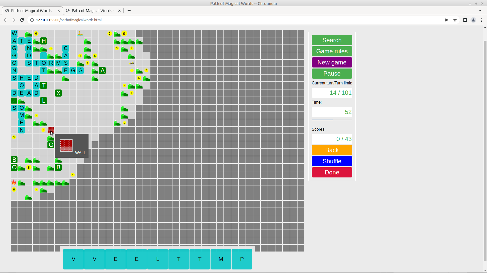

Path of Magical Words is a word building game in which you have nine randomly drawn letters for word formation in each round. The goal is to collect as many points as possible by the end of the game. One of the sources of points is the 1-9 points rewards placed in the occupiable squares of the playing field. 100 points are awarded if the playing field is fully explored, i.e. no square is left covered. Joining in the scattered pre-entered letters earns 5 points per piece, and if all of them are used by the end of the game, an additional 50 points are awarded. There are also various objects marked with pictures on the playing field (hovering the cursor over them or tapping on the touch screen will display the word), which will earn you 10 points per item and another round. If all these objects are used, it is worth 100 points.. The point values awarded for the words created are influenced by the number of new letters on the board:
Video tutorial: 
There are two options for placing letters on the board. You can drag them from the rack to the desired field on the board. Or click on the field of the board where you want to place the first letter of the word you want to drop. An arrow will appear in the space to indicate the direction of the drop. If you click there again, the direction will change from horizontal to vertical, and vice versa. And then click on the letters on the rack in the order in which they follow each other in the word. On touchscreen devices, only the second option is given. You tap in the first letter's square, then the letters on the rack in order, as they follow each other in the word.
The dictionary is deliberately not include coarse words. After each turn the state of the game is automatically saved on your computer. If the program finds a saved game (interrupted game) when the game is started, it will offer to continue.
Click on the New game button to start a new game. If you do this while a game is in progress, a warning message will appear. If you go on, you cannot continue the previous game. Use the Cancel button to return to the game in progress. If you do not want to play with the previous time setting you need to reload the page to return to the screen that allows you to change the current setting.
The first word posted must use the box in the top left corner of the board.
The new word must always join those already on the board.
During the game, you have 9 new letters in each turn, of which during the preset time you need to place at least one on the board. The current time remaining is displayed both in digits and graphically, using a progress bar.
If no new letter is placed on the board during the turn, it is considered as inactivity. The number of the current turn and the number of idle turns are shown in a display, separated by a "/" sign. When the number of idle turns reaches three, the game ends.
Use the Search button to make sure the dictionary contains the word you want to place. Red indicates if the word is not valid, the text turns green if it is valid.
Use the Pause button to stop and resume the game. During the pause, the current state of the board and the letters on the rack are not visible.
"*" (joker) characters often are drawn. When they are placed on the board, they can be replaced with the desired by selecting one of the letters of listed in a pop-up.
Letters which have been placed on the board but not yet finalised can be returned to the rack by pressing the Back button. The order of the letters on the rack can be changed by pressing the Shuffle button.
Each time a letter is placed on the board, the program checks that the letters on the board form a valid word in the dictionary. If they do, the colour of the newly added letters changes to yellow. If the new letters on the board at the moment form valid words, a small green circle indicates the score available.
The finalisation of the letters on the board is done with the Done button, then the validity of all the newly created words is checked against the built-in dictionary. If a word is not in the dictionary, a pop-up message warns you. After pressing OK, you can try again to create the word.
At the end of the game, click on the Details button to see the words for each round.